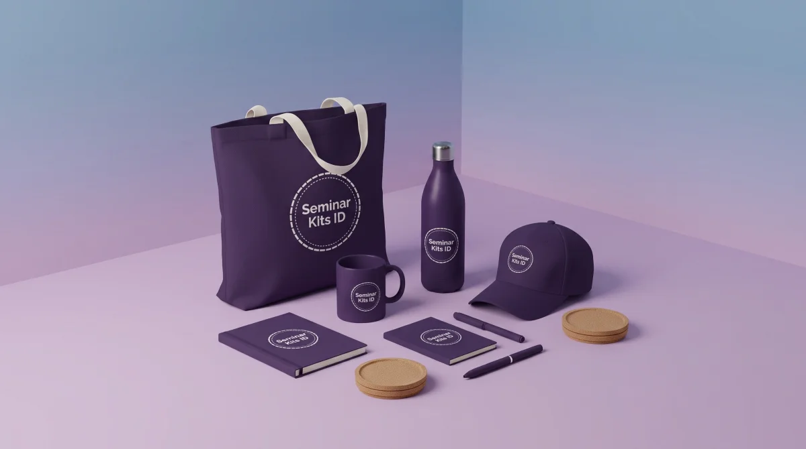

Hampers dan Gift Box Perusahaan Custom untuk Karyawan, Klien, dan Mitra
Ringkasan Strategis Pengadaan Hampers B2B
Hampers dan gift box perusahaan yang tepat bukan sekadar kumpulan produk generik yang dimasukkan ke dalam kotak. Paket hadiah korporat yang efektif harus disesuaikan secara presisi dengan profil penerima, momentum acara, alokasi anggaran per orang, serta tingkat personalisasi yang diharapkan. Untuk distribusi massal karyawan, prioritas utama terletak pada kegunaan fungsional harian dan efisiensi logistik. Sedangkan untuk klien prioritas atau mitra strategis, keunggulan mutu produk, kerapian kemasan rigid hardbox, kartu ucapan berstempel resmi, dan etika relasi bisnis menjadi kunci penentu persepsi profesionalisme perusahaan.
| Kebutuhan / Segmen | Isi yang Dapat Dipertimbangkan | Fokus Utama Pengadaan |
|---|---|---|
| Hampers Karyawan | Tumbler stainless vacuum, notebook spiral/hardcover, pouch kanvas, kartu apresiasi. | Nilai guna harian, inklusivitas, dan kemudahan distribusi massal. |
| Hampers Klien & Mitra | Executive gift set, pen metal berbobot mantap, agenda kulit emboss, tumbler LED, specialty coffee. | Kesan profesional, nilai persepsi (perceived value), dan etika relasi. |
| Akhir Tahun (Year-End) | Kalender meja custom, agenda tahun baru, artisan tea blend, mug keramik, kartu refleksi direksi. | Perencanaan stok dini Q3/Q4, ketepatan deadline, dan ketahanan kirim. |
| Lebaran / Idulfitri | Sajadah travel busa empuk, tasbih digital, tumbler insulasi, kue kering toples kaca, sleeve festive. | Kepekaan momen spiritual, higienitas, dan ketepatan waktu sebelum cuti bersama. |
| Tahun Baru (New Year) | Desk set organizer, planner produktivitas, powerbank nirkabel, botol minum premium. | Konsistensi identitas merek, netralitas tema, dan semangat produktivitas. |
| Anniversary / Milestone | Merchandise bertema edisi terbatas (limited edition), medali apresiasi, jaket polo bordir. | Kebanggaan korporat, masa bakti, dan perayaan pencapaian bersama. |
- Hindari jebakan musiman generik: pisahkan strategi pengadaan evergreen, segmen penerima (karyawan vs klien), serta momen penyerahan secara spesifik.
- Pengalaman unboxing (unboxing experience) menyumbang hingga 40% dari total nilai persepsi hadiah; jangan korbankan struktur kemasan demi sekadar mencari harga termurah.
- Gunakan formula perhitungan total anggaran: mencakup biaya isi unit, box kemasan, setup branding logo, kartu ucapan, hingga estimasi ongkos kirim multi-alamat.
- Terapkan branding subtil (subtle branding) untuk penerima eksekutif dan klien VIP agar produk terasa sebagai tanda penghargaan tulus, bukan sekadar brosur promosi berjalan.
- Kunci persetujuan mockup desain dan daftar alamat pengiriman minimal 3-4 minggu sebelum hari-H untuk mengantisipasi lonjakan kargo di musim puncak (peak season).
- 1. Apa Itu Hampers dan Gift Box Perusahaan?
- 2. Pilih Hampers Berdasarkan Profil Penerima
- 3. Rekomendasi Isi Hampers Berdasarkan Momen Acara
- 4. Menentukan Alokasi Budget Hampers Perusahaan
- 5. Kemasan, Kartu Ucapan, dan Pengalaman Unboxing
- 6. Personalisasi Logo, Nama Individu, dan Kartu Ucapan
- 7. Manajemen Pengiriman: Satu Alamat vs Multi-Alamat
- 8. Checklist 10 Parameter Memilih Vendor Hampers B2B
- 9. Alur Pemesanan Hampers di Seminarkits.id
- 10. Kategori Produk Pilihan untuk Isi Hampers
- 11. Pertanyaan Umum Seputar Pengadaan Hampers (FAQ)
1. Apa Itu Hampers dan Gift Box Perusahaan?
Dalam dunia komunikasi korporat dan hubungan industrial modern, pemberian hadiah bukan lagi sekadar formalitas akhir tahun atau rutinitas menjelang libur hari raya. Hampers dan gift box perusahaan adalah paket cinderamata terkurasi yang dirancang secara khusus untuk menyampaikan pesan apresiasi, mempererat tali silaturahmi bisnis, merayakan tonggak pencapaian (milestone), serta memperkuat identitas merek di mata para pemangku kepentingan (stakeholders).
Berbeda dengan pengadaan barang komoditas biasa, gift box korporat mengintegrasikan beberapa elemen esensial sekaligus: kombinasi produk fungsional berkualitas tinggi, produk santapan higienis atau relaksasi, kemasan pelindung bernilai estetika superior, serta pesan emosional melalui kartu ucapan yang dipersonalisasi.
Banyak praktisi procurement pemula sering kali menyamakan hampers dengan corporate gift tunggal atau souvenir kantor biasa. Memahami perbedaan mendasar dari ketiga kategori ini sangat krusial agar alokasi dana perusahaan tepat sasaran:
- Hampers & Gift Box Perusahaan: Berbentuk paket multiproduk yang dikemas di dalam satu wadah tematik (seperti rigid hard box atau magnetic box). Sangat berorientasi pada momentum perayaan khusus (Lebaran, Natal, Tahun Baru, dies natalis) dan menitikberatkan pada kurasi tema serta pengalaman membuka kado (unboxing experience).
- Corporate Gift: Cenderung berupa satu item barang bernilai tinggi (high-ticket single item) yang diberikan secara personal kepada individu penting tertentu (seperti pulpen mewah untuk penandatanganan kontrak, jam meja diplomatik, atau plakat kristal eksklusif untuk narasumber kenegaraan).
- Souvenir Kantor: Biasanya berupa produk promosi massal dengan satu item utama (seperti payung dinas, mug keramik, atau goodie bag pelatihan) yang dibagikan pada kegiatan internal seperti family gathering, outbound karyawan, atau seminar kedinasan.
2. Pilih Hampers Berdasarkan Profil Penerima
Kesalahan fatal yang kerap terjadi dalam pengadaan cinderamata korporat adalah menerapkan pendekatan seragam (one-size-fits-all). Menghadiahkan barang yang sama persis kepada staf operasional lapangan dan jajaran direktur mitra bisnis tidak hanya mencerminkan ketidakpekaan sosial, tetapi juga menurunkan efektivitas investasi branding perusahaan Anda. Kunci sukses pengadaan hampers B2B berakar pada pemetaan profil penerima.
A. Hampers untuk Karyawan Internal
Bagi karyawan, hampers adalah wujud apresiasi nyata dari manajemen atas dedikasi, lembur, dan kerja keras yang telah dicurahkan sepanjang kuartal atau tahun berjalan. Hadiah internal berfungsi sebagai pengungkit motivasi kerja dan penguat rasa memiliki (employer branding).
Dalam menyusun hampers karyawan, perhatikan tiga prinsip utama berikut:
- Fungsionalitas Nyata Sehari-hari: Prioritaskan produk yang langsung mempermudah rutinitas harian di kantor maupun mobilitas harian (commuter), seperti tumbler insulasi penahan suhu, lunch box ramah lingkungan, payung lipat kokoh, atau tas jinjing kanvas.
- Inklusivitas Isi Paket: Jika paket menyertakan produk konsumsi (makanan atau minuman), pastikan memiliki sertifikasi Halal resmi BPOM, masa kedaluwarsa panjang minimal 6-12 bulan, dan netral dari alergen umum. Jangan memaksakan produk yang bertentangan dengan latar belakang budaya karyawan.
- Efisiensi Logistik dan Kemudahan Dibawa: Ingat bahwa banyak karyawan pulang menggunakan transportasi umum (KRL, MRT, atau busway). Kotak kemasan berukuran raksasa tanpa tali pegangan hanya akan merepotkan penerima saat perjalanan pulang.

B. Hampers untuk Klien dan Mitra Bisnis
Saat berhadapan dengan pengambil keputusan B2B, manajer pengadaan (procurement), dan pimpinan instansi rekanan, hampers bertindak sebagai duta kehormatan yang merepresentasikan profesionalisme institusi Anda. Tujuannya adalah mengukuhkan ikatan relasi kemitraan, memelihara retensi kontrak tahunan, serta membuka peluang kolaborasi baru.
- Kualitas Material Tanpa Kompromi: Pilih barang berbahan premium yang awet digunakan bertahun-tahun, seperti tumbler stainless steel grade medis SUS 304, agenda kerja bersampul kulit sintetis bertekstur halus, atau set cangkir keramik porselen artisan.
- Aplikasi Branding yang Subtil (Subtle Branding): Hindari mencetak logo perusahaan Anda sebesar telapak tangan di bagian depan produk. Klien eksekutif menyukai logo kecil yang diaplikasikan secara anggun melalui teknik laser engraving monokrom pada permukaan logam atau blind deboss tenggelam pada sampul kulit buku agenda.
- Etika dan Kepatuhan Anti-Gratifikasi: Sesuaikan nilai nominal hampers dengan batas toleransi etika kepatuhan (compliance code of conduct) yang berlaku di instansi klien, terutama jika bermitra dengan badan usaha milik negara (BUMN) atau kementerian pemerintah.
C. Hampers untuk Pembicara, VIP, dan Partner Event
Narasumber ahli, keynote speaker, dan tamu kehormatan simposium menuntut bentuk apresiasi yang mencerminkan rasa hormat tertinggi. Hadiah untuk segmen ini harus memiliki bobot prestise yang tinggi namun tetap praktis dan aman untuk dimasukkan ke dalam koper bagasi kabin pesawat terbang.
Kombinasi ideal untuk tamu VIP mencakup powerbank berkapasitas besar bersertifikasi aman penerbangan (flight-friendly), wireless presenter pen pointer berpresisi tinggi, tumbler thermal berindikator suhu LED digital, serta plakat akrilik kayu berukir nama narasumber yang dikemas dalam kotak beludru magnetik.
D. Hampers untuk Pelanggan Loyal dan Komunitas
Untuk pelanggan setia yang secara konsisten melakukan pembelian ulang atau anggota komunitas brand yang aktif, hampers berperan sebagai lambang keanggotaan istimewa (badge of belonging). Kunci keberhasilannya terletak pada kurasi produk bertema unik yang memicu antusiasme mereka untuk mengunggah pengalaman membuka hadiah ke media sosial (user-generated content).
Tips Praktisi: Sertakan kartu anggota eksklusif berbahan PVC tebal atau kode kupon diskon personal (dynamic QR voucher) di balik tutup kemasan gift box untuk mengonversi apresiasi komunitas menjadi repeat order digital yang terukur.
3. Rekomendasi Isi Hampers Berdasarkan Momen Acara
Waktu penyerahan hampers sangat mempengaruhi komposisi isi, warna visual kemasan, serta pesan emosional yang diusung. Menyelaraskan tema hadiah dengan momen kalender korporat akan memperkuat relevansi dan daya ingat penerima terhadap brand Anda.
A. Hampers Akhir Tahun (Year-End Gift Box)
Bulan November hingga Desember adalah periode tersibuk bagi divisi corporate communication dan GA. Hampers akhir tahun dirancang untuk mengapresiasi kerja sama yang telah terjalin sepanjang empat kuartal sekaligus menyambut lembaran kerja baru dengan optimisme tinggi.
- Isi Paket yang Direkomendasikan: Kalender meja kerja custom dengan penanggalan libur nasional resmi, buku agenda kerja hard cover bersampul kulit, tumbler vacuum tahan dingin/panas 12 jam, set pulpen eksekutif, serta specialty coffee drip bag atau artisan herbal tea.
- Manajemen Risiko Pengadaan: Mengingat akhir tahun adalah musim puncak industri logistik, pastikan pesanan telah masuk antrean workshop produksi paling lambat akhir Oktober agar terhindar dari keterlambatan pengiriman kargo antarpulau akibat cuaca buruk atau lonjakan volume ekspedisi.

B. Hampers Lebaran dan Hari Raya Idulfitri
Momen Idulfitri menuntut kehangatan silaturahmi yang sarat akan nilai ketulusan dan kesucian. Kemasan hampers Lebaran biasanya bernuansa hijau sage, putih mutiara, atau sentuhan emas anggun dengan ornamen geometri Islami yang artistik.
- Pilihan Produk Ibadah & Keseharian: Sajadah travel berbahan silk anti-air dengan pouch resleting, botol minum higienis bebas BPA, toples kaca kedap udara berisi cookies premium atau kurma ajwa pilihan, serta kartu ucapan mohon maaf lahir batin yang ditandatangani jajaran direktur.
- Pentingnya Kepatuhan Kedaluwarsa: Bila paket Anda menyertakan makanan basah atau kue kering toples, pastikan vendor menyertakan tanggal kedaluwarsa yang terverifikasi dan segel pelindung (tamper-evident seal) guna menjaga kerenyahan makanan hingga tiba di rumah klien.
C. Gift Box Tahun Baru dan Resolusi Kerja
Dibagikan pada pekan pertama bulan Januari, gift set tahun baru bertujuan untuk memompa semangat produktivitas kerja tim setelah libur panjang. Karena diberikan di awal tahun, fokus isi adalah perlengkapan manajemen waktu dan penunjang mobilitas meja kantor.
Kombinasi yang sangat digemari meliputi daily planner organizer, mousepad kulit dengan wrist-rest empuk, flashdisk OTG kartu berkapasitas besar, dan kabel charger multi-port 3-in-1 nylon braided yang tangguh.
D. Hampers Anniversary dan Employee Appreciation
Perayaan hari ulang tahun perusahaan (corporate anniversary) atau penganugerahan masa bakti karyawan (long service award) adalah momen bersejarah yang layak diabadikan dengan cinderamata bernilai koleksi tinggi.
Isi paket dapat berupa jaket rompi formal bordir komputer, medali atau pin logam lapis emas berlogo korporat, kartu ucapan bernomor seri edisi terbatas, serta botol minum termal berukirkan nama masing-masing karyawan sebagai tanda penghormatan atas dedikasi mereka.
Peringatan Pengadaan: Jangan mendaur ulang isi hampers dari sisa stok souvenir tahun lalu tanpa pemeriksaan fisik menyeluruh. Bau apek pada kain kanvas atau baterai powerbank yang aus akibat disimpan terlalu lama di gudang akan mencoreng citra kredibilitas perusahaan Anda.
Rencanakan Pengadaan Hampers Perusahaan Anda Hari Ini
Konsultasikan kebutuhan segmen penerima, tema acara, jumlah unit, dan alokasi anggaran Anda bersama tim spesialis Seminarkits.id. Dapatkan penawaran harga resmi (RAB) dan sampel 3D mockup gratis dalam 1x24 jam.
4. Menentukan Alokasi Budget Hampers Perusahaan
Salah satu hambatan terbesar divisi procurement adalah menyusun rencana anggaran biaya (RAB) yang realistis tanpa mengalami pembengkakan dana (cost overrun) saat proses produksi berjalan. Sering kali, staf pengadaan hanya memperhitungkan harga unit barang pokok, tanpa menyadari adanya pos biaya pendukung seperti box kemasan, setup cetak, kartu ucapan, hingga biaya kargo pengiriman.
Formula standar pengadaan hampers profesional B2B dihitung dengan rumus:
Berikut adalah 7 faktor utama penentu struktur biaya hampers yang wajib dievaluasi:
- Skala Kuantitas Pesanan: Berlaku hukum skala ekonomis grosir; memesan 500 paket memberikan efisiensi biaya cetak logo dan produksi box hingga 25-35% dibanding memesan 50 paket.
- Tingkat Kualitas Material Produk: Perbedaan spesifikasi teknis (seperti tumbler stainless 304 vacuum vs botol plastik tritan) menjadi penentu terbesar harga pokok barang.
- Kompleksitas Box Kemasan: Kotak kardus kraft lipat ekonomis jauh lebih hemat biaya dibanding rigid hardbox laminasi doff bermagnet dengan cetakan cetak timbul emas (hotprint gold foil).
- Teknik Personalisasi Branding: Grafir laser nama individu per unit membutuhkan waktu mesin lebih lama dibanding sablon satu warna pada kemasan luar.
- Aksesoris Tambahan: Pita satin berlogo, kertas cacah peredam guncangan (crinkle filler paper), dan stiker segel hologram meningkatkan estetika dengan biaya terjangkau.
- Metode Pengiriman: Biaya pengiriman terpusat ke kantor pusat sangat ekonomis, sementara pengiriman langsung ke ratusan alamat rumah karyawan (multi-drop ship) membutuhkan alokasi biaya kurir individual dan kemasan luar ekstra aman.
- Lead Time Produksi: Menghindari pesanan kilat darurat (rush order) akan menghindarkan instansi Anda dari beban biaya lembur workshop (overtime surcharge).
| Tier Budget | Rentang Biaya / Paket | Kombinasi Produk & Kemasan | Catatan Strategis |
|---|---|---|---|
| Tier Efisien Mass Distribution |
Rp75.000 - Rp140.000 | Tumbler stainless basic, pulpen gel stylus, notebook spiral A5, pouch blacu, kemasan corrugated kraft box berpita. | Utamakan ketepatan fungsi dan efisiensi volume pengiriman massal ratusan karyawan. |
| Tier Menengah Corporate Standard |
Rp150.000 - Rp275.000 | Tumbler vacuum SUS 304, agenda kerja sampul kulit sintetis, pen metal elegan, flashdisk kartu 16GB, rigid hardbox custom logo. | Keseimbangan ideal antara nilai persepsi eksklusif dan pengendalian anggaran B2B rutin. |
| Tier Premium VIP & Strategic Partner |
Rp300.000 - Rp650.000+ | Executive tumbler LED, wireless powerbank 10000mAh, smart desk clock, set cangkir porselen, magnetic hardbox busa EVA presisi. | Dikhususkan untuk direktur rekanan, tamu kehormatan, dan pengamanan kontrak kerja sama bernilai tinggi. |
5. Kemasan, Kartu Ucapan, dan Pengalaman Unboxing
Dalam industri cinderamata korporat modern, kemasan bukan sekadar pembungkus luar pelindung benturan. Kemasan adalah babak pembuka dari sebuah narasi penghargaan. Riset perilaku konsumen membuktikan bahwa sensasi saat memegang kotak yang kokoh, membuka pita satin, dan melihat penataan barang yang simetris menghasilkan 40% impresi positif awal sebelum produk di dalamnya disentuh.
Memilih jenis box yang tepat harus mempertimbangkan dimensi barang, berat total, nilai prestise, serta keamanan selama proses pengiriman jarak jauh:
| Jenis Kemasan | Paling Cocok Untuk | Kelebihan Utama | Pertimbangan Produksi |
|---|---|---|---|
| Rigid Hard Box | Paket hampers formal, corporate gift set, cangkir porselen. | Struktur sangat kokoh, tidak mudah penyok, tampilan visual mewah. | Membutuhkan ruang penyimpanan gudang lebih besar dan biaya material lebih tinggi. |
| Magnetic Hard Box | Hadiah relasi VVIP, eksekutif mitra bisnis, cinderamata direksi. | Mekanisme buka-tutup magnetik sangat elegan dan memuaskan saat dibuka. | Biaya unit paling tinggi di antara varian kotak kemasan lainnya. |
| Corrugated Kraft Box | Hampers bertema eco-friendly, suvenir massal, pengiriman kurir. | Hemat biaya, ramah lingkungan, tahan benturan saat proses transit ekspedisi. | Tampilan lebih kasual; perlu aksesoris pita atau sleeve agar terlihat elegan. |
| Hamper Basket Anyaman | Paket hari raya tradisional, buah-buahan, toples kue Lebaran. | Nuansa dekoratif klasik dan sangat kental dengan suasana festive keluarga. | Sulit ditumpuk di dalam bagasi mobil kargo; berisiko rusak jika dikirim jarak jauh. |
| Paper Bag Kraft / Ivory | Distribusi langsung di lokasi acara, gathering kantor lokal. | Sangat praktis dijinjing pulang oleh peserta tanpa merepotkan tangan. | Perlindungan benturan sangat terbatas jika paket memuat barang pecah belah. |

Selain kotak utama, jangan pernah meremehkan kekuatan selembar kartu ucapan (greeting card). Kartu ucapan yang dicetak di atas kertas bertekstur tebal (seperti Concorde atau Linen 250 gsm) dengan pesan personal dari pimpinan instansi mengubah paket komoditas menjadi simbol hubungan batin yang hangat.
6. Personalisasi Logo, Nama Individu, dan Kartu Ucapan
Tingkat personalisasi adalah pembeda utama antara kado yang dibeli dadakan di supermarket retail dengan hampers korporat terkonsep matang. Personalisasi memperlihatkan kepada penerima bahwa bingkisan tersebut memang disiapkan khusus untuk menghargai kehadiran mereka.
| Bentuk Personalisasi | Segmen yang Tepat | Kebutuhan Data Awal | Dampak ke Lead Time |
|---|---|---|---|
| Logo Perusahaan | Hampers massal karyawan, expo promosi, gathering. | File master logo format vektor (.AI, .EPS, atau .PDF). | Cepat; 1 kali proses cetak plat master untuk seluruh unit. |
| Nama Individu Penerima | Klien VIP, pimpinan rekanan, penghargaan masa bakti. | Daftar nama lengkap dan gelar resmi berformat Excel/spreadsheet. | Menambah durasi pengerjaan mesin laser grafir per unit. |
| Sleeve Box Custom | Paket tematik Lebaran, Natal, atau Dies Natalis perusahaan. | Desain artwork bertema selaras dengan brand identity korporat. | Membutuhkan proses cetak offset full color dan proses lem lipat. |
| Kartu Ucapan Personalisasi | Apresiasi akhir tahun, ucapan selamat pensiun, kemitraan. | Teks copy ucapan resmi dan tanda tangan digital direktur. | Cetak digital variabel data cepat tanpa memperlambat jadwal kirim. |
7. Manajemen Pengiriman: Satu Alamat vs Multi-Alamat
Banyak pengadaan hampers yang sukses dalam hal produksi namun gagal total dalam hal kepuasan pelanggan akibat kendala distribusi logistik. Di era sistem kerja hibrida (hybrid work) dan organisasi terdesentralisasi, pola distribusi hampers terbagi menjadi dua skenario utama:
A. Pengiriman Terpusat (Single Destination)
Semua unit dipaketkan dalam kardus master boks tebal dan dikirim langsung ke gudang logistik atau kantor pusat perusahaan pemesan. Karyawan atau tamu kemudian mengambil paket secara langsung saat acara tatap muka berlangsung. Keuntungannya adalah biaya kirim kargo sangat hemat dan risiko unit hilang di perjalanan dapat diminimalisasi.
B. Pengiriman Multi-Alamat (Direct-to-Doorstep Multi-Drop)
Paket hampers dikirimkan satu per satu langsung ke alamat rumah masing-masing karyawan yang bekerja dari rumah (WFH) atau ke kantor cabang klien di puluhan kota di seluruh Indonesia. Skenario ini menuntut standar proteksi pengemasan yang jauh lebih ketat:
- Setiap kotak hampers wajib dibungkus minimal 3-4 lapis bubble wrap tebal dan dimasukkan ke dalam kardus kardus pengaman sekunder (outer shipping box).
- Gunakan lakban pengaman bersegel (tamper-evident security tape) dan tempelkan label peringatan barang rapuh (Fragile Sticker) pada kedua sisi kardus.
- Siapkan database alamat pengiriman yang telah diverifikasi kelengkapannya: nama penerima aktual, nomor telepon aktif WhatsApp, alamat jalan lengkap dengan nomor rumah, RT/RW, kelurahan, kecamatan, kota, dan kode pos valid.

8. Checklist 10 Parameter Memilih Vendor Hampers B2B
Sebelum menerbitkan surat pesanan resmi (Purchase Order), gunakan 10 parameter verifikasi ini untuk memastikan vendor yang Anda tunjuk memiliki kapasitas manufaktur yang kompeten dan berintegritas tinggi:
- Transparansi Spesifikasi Produk: Apakah vendor menyebutkan material secara gamblang (seperti stainless steel SUS 304, kain kanvas marsoto, kertas art carton 310 gsm) atau hanya menggunakan klaim generik "kualitas premium"?
- Portofolio Dokumentasi Nyata: Apakah foto dan video yang ditampilkan di katalog merupakan hasil produksi fisik aktual workshop mereka sendiri, bukan comotan gambar mockup internet?
- Ketersediaan Sampel Fisik (Dummy Sample): Apakah vendor bersedia memproduksi dan mengirimkan sampel fisik pra-produksi sebelum komitmen massal dijalankan?
- Layanan Digital Mockup 3D Gratis: Apakah tim desainer vendor mampu memberikan visualisasi tata letak logo dan kemasan sebelum proses cetak dimulai?
- Struktur Penawaran Rinci (RAB Transparan): Apakah surat penawaran harga mencantumkan biaya barang, cetak logo, box, aksesoris, serta opsi biaya logistik secara terpisah tanpa biaya siluman?
- Jaminan Kepatuhan Higienitas: Untuk isi makanan/minuman, apakah produk memiliki izin edar BPOM resmi dan masa kedaluwarsa yang terjamin aman?
- SOP Quality Control Bertahap: Apakah vendor melakukan inspeksi visual pada setiap unit sebelum dikemas ke dalam boks ekspedisi?
- Kemampuan Manajemen Multi-Alamat: Apakah vendor memiliki integrasi sistem logistik untuk menangani pengiriman ratusan paket ke berbagai penjuru kota?
- Garansi Penggantian Kerusakan (Replacement Warranty): Apakah vendor menjamin penggantian unit 100% baru secara gratis jika terjadi kerusakan fisik selama proses transit ekspedisi?
- Kelengkapan Legalitas & Perpajakan: Apakah vendor berbadan hukum resmi yang dapat menerbitkan faktur pajak (PPN/PPh) dan kwitansi berstempel dinas?
9. Alur Pemesanan Hampers di Seminarkits.id
Di Seminarkits.id, kami menerapkan sistem pengadaan terstruktur 6 tahap guna memastikan setiap pesanan korporat selesai tepat waktu dengan standar presisi tanpa cela:
- Kirimkan Brief Kebutuhan: Sampaikan profil penerima, momen acara, perkiraan kuantitas unit, target budget per paket, deadline hari-H, dan file logo instansi Anda kepada tim kami.
- Konsultasi & Rekomendasi Kurasi: Tim spesialis kami menyusun simulasi kombinasi produk, opsi kemasan box, serta kalkulasi RAB yang paling efisien sesuai alokasi dana Anda.
- Digital Proofing & Sampel Fisik: Kami membuatkan 3D digital mockup penempatan logo pada produk dan box. Untuk pesanan skala besar, sampel fisik pra-produksi dapat kami kirimkan ke kantor Anda.
- Persetujuan Resmi & Pembayaran: Penandatanganan persetujuan desain (sign-off mockup), penerbitan invoice resmi, dan pembayaran uang muka produksi.
- Produksi, Branding & Assembling: Proses manufaktur produk, aplikasi cetak logo presisi, perakitan box kemasan, penataan isi, penyisipan kartu ucapan, dan inspeksi mutu (quality control).
- Pengemasan Ekspedisi & Distribusi: Paket dibungkus proteksi ganda dan dikirimkan ke lokasi kantor Anda atau didistribusikan langsung ke alamat masing-masing penerima dengan pelacakan nomor resi transparan.
10. Kategori Produk Pilihan untuk Isi Hampers
Kreasikan paket hampers korporat Anda dengan memilih berbagai kategori produk fungsional unggulan yang diproduksi langsung oleh Seminarkits.id:
Paket Hampers Perusahaan Aktual Siap Dipesan
Untuk mempermudah proses pengadaan divisi Anda, Seminarkits.id menyediakan paket hampers tematik terkurasi lengkap dengan hardbox magnetik dan opsi grafir laser:
11. Pertanyaan Umum Seputar Pengadaan Hampers (FAQ)
Konsultasikan Pengadaan Hampers Perusahaan Anda Bersama Praktisi
Siapkan brief pengadaan Anda: tujuan acara, profil penerima, kuantitas paket, alokasi budget per unit, tanggal penyerahan barang, dan file logo instansi Anda. Tim konsultan Seminarkits.id siap menyusun proposal paket kurasi, estimasi RAB resmi, serta sampel digital proofing dalam 1x24 jam.
Artikel Terkait Pengadaan Cenderamata Perusahaan